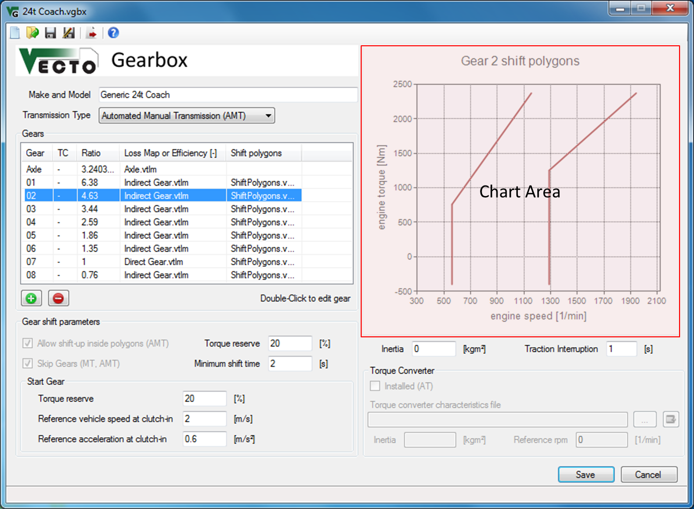

Description
The Gearbox File (.vgbx) defines alls gearbox-related input parameters like gear ratios and transmission loss maps.
See Gear Shift Model for details.
Relatve File Paths
It is recommended to define relative filepaths. This way the Job File and all input files can be moved without having to update the paths.
Example: "Gears\Gear1.vtlm" points to the "Gears" subdirectory of the Gearbox File's directoy.
VECTO automatically uses relative paths if the input file (e.g. Shift Polygons File) is in the same directory as the Gearbox File. (The Gearbox File must be saved before browsing for input files.)
Main Gearbox Parameters
Make and Model
Transmission Type
Inertia [kgm2]
Traction Interruption [s]
Gears
Use the and
and  buttons to add or
remove gears form the vehicle. Doubleclick entries to edit existing gears.
buttons to add or
remove gears form the vehicle. Doubleclick entries to edit existing gears.
Gear shift parameters
 Allow shift-up inside
polygons
Allow shift-up inside
polygons
Skip Gears
Torque Reserve [%]
Minimum shift time [s]
Start Gear
Chart Area
The Chart Area displays the Shift Polygons Input File (.vgbs) for the selected gear.
Torque Converter
The Torque Converter Model is still in development.
Inertia [kgm2]
Controls
 New
file
New
file
Create a new empty .vgbx file
 Open
existing file
Open
existing file
 Save
current file
Save
current file
Save file as...
 Send
current file to the VECTO
Editor
Send
current file to the VECTO
Editor
Open file browser.
 Open file (see File
Open Command).
Open file (see File
Open Command).
Save and close file
Cancel without saving
The Gearbox File (.vgbx) defines alls gearbox-related input parameters like gear ratios and transmission loss maps.
See Gear Shift Model for details.
Relatve File Paths
It is recommended to define relative filepaths. This way the Job File and all input files can be moved without having to update the paths.
Example: "Gears\Gear1.vtlm" points to the "Gears" subdirectory of the Gearbox File's directoy.
VECTO automatically uses relative paths if the input file (e.g. Shift Polygons File) is in the same directory as the Gearbox File. (The Gearbox File must be saved before browsing for input files.)
Main Gearbox Parameters
Make and Model
Free text defining the
gearbox model, type, etc.
Transmission Type
Depending on the
transmission type some options below are not available. The following
types are available:
- Manual Transmission (MT)
- Automated Manual Transmission (AMT)
- Automatic Transmission (AT)
- Custom
Inertia [kgm2]
Rotational inertia of the
gearbox (constant for all gears).
Traction Interruption [s]
Interruption during
gear shift event.
Gears
Use the
- Gear "A" defines the ratio of the axle transmission / differential.
- Column "TC" (AT only) defines which gears are using the torque converter (lock-up clutch open).
- Column "Loss Map or Efficiency" allows to define either a constant efficiency value or a loss map (.vtlm).
- Column "Shift polygons" defines the Shift Polygons Input File (.vgbs) for each gear. Not required in Declaration Mode. See Gear Shift Model for details.
- Column "Full Load Curves" defines the Full Load Curve for (.vfld) each gear. It is used for torque limiting and generic shift polygons in Declaration Mode. If no file is defined the engine full load curve will be used.
Gear shift parameters
Allow shift-up inside
polygonsSee Gear Shift Model.
Skip GearsSee Gear Shift Model.
Torque Reserve [%]
This parameter is required
for the "Allow shift-up
inside polygons" and "Skip
Gears" options.
Minimum shift time [s]
Limits
the time between two gear shifts in whole seconds. This rule will be
ignored if rpms are too high or too low. Note that high values may
cause high rpms during acceleration.
Start Gear
In order to calculate an
appropriate
gear for vehicle start (first gear after vehicle standstill) a
fictional load case is calculated using a specified reference vehicle speed
and reference
acceleration
together with the actual road gradient, transmission losses and
auxiliary power demand. This way the start gear is independent from the
target speed. VECTO uses the highest possible gear which provides the
defined torque reserve.
Chart Area
The Chart Area displays the Shift Polygons Input File (.vgbs) for the selected gear.
Torque Converter
The Torque Converter Model is still in development.
Inertia [kgm2]
Rotational inertia of the engine-side part of the torque converter. (Gearbox-side inertia is not considered in VECTO.)
Controls
Create a new empty .vgbx file
Open an existing .vgbx
file
Save file as...
Note: If the current
file was opened via the VECTO
Editor the file will be sent automatically when saved.
Open file browser.
Open file (see File
Open Command).Save and close file
If necessary the file path
in the VECTO Editor
will be updated.
Cancel without saving